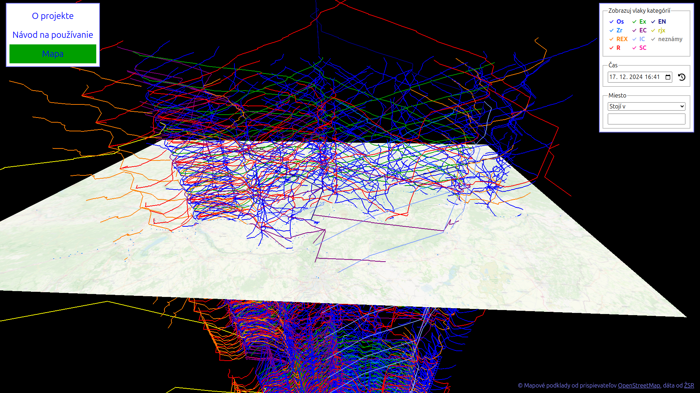

Návod na použitie
Poviem na rovinu - stránka vyzerá pre začiatočníka a neznalého strašne mätúco:
Snáď po prečítaní návodu budete mať aspoň trochu tušenia, ako mapu používať.
Na čo sa pozerám?
Vľavo hore je menu, ako ste už asi zistili. Vpravo hore je ovládanie - tu si môžete vybrať, aké vlaky chcete zobraziť - je to vlastne filter a je veľmi dôležitý pre prehľadnosť.
V strede vidíte 3D priestor, v ktorom je umiestnená mapa Slovenska a farebná čiara pre každý osobný vlak, ktorý ide od zvoleného dátumu a času. Áno, KAŽDÝ osobný vlak. Síce to môže byť mätúce, ale myslím, že najlepšia voľba je užívateľovi dať všetky možnosti a nech si sám vyberie.
Ovládací panel
Tu si filtrujete, ktoré spoje sa vám zobrazia - vidieť všetko naraz je predsa len mätúce. Môžete si nastaviť:
-
Kategórie vlakov - ktoré kategórie vlakov sa budú na mape zobrazovať - ak hľadáte napríklad iba vlaky, ktorými možno cestovať zdarma, nechajte si iba Os, Zr, REX, R a Ex. Farba čiar vlakov na mape tiež nie je len náhodná, odvíja sa práve od kategórie vlaku:
- Os - osobný vlak - modrá
- Zr - zrýchlený vlak - svetlejšia modrá
- REX - regionálny expres - oranžová
- R - rýchlik - červená
- Ex - expres - zelená
- EC - Eurocity - fialová
- IC - Intercity - bledomodrá
- SC - Supercity - ružová? (neviem, som trochu farboslepý)
- EN - Euronight - tmavomodrá
- RJX - Railjet xpress - žltá
- neurčené alebo iné vlaky sú - sivou.
Farby som sa snažil dávať zväčša podobné ako majú iné nástroje, napríklad vyhľadávač cestovných poriadkov CGTransit.
-
Dátum a čas - nenazval by som to úplne filtrom, keďže vlakov z obrazovky veľmi neubudne (ak si teda nenavolíte štátny sviatok), ale je to dôležité na orientáciu. Mapa funguje tak, že navolený dátum a čas je reprezentovaný práve mapou Slovenska - kde čiara pretína mapu, tam by podľa plánu mal v tom čase vlak byť. Ak teda čiara vlaku pretína mapu niekde medzi Trnavou a Brestovanmi, tak tam by vlak mal byť. Čiara nad mapou ukazuje, kadiaľ vlak ešte pôjde. Vertikálne čiary nastávajú nad stanicami, kde vlak dlhšie stojí - niekedy pekne vidno, ako sa na jednokoľajke dva vlaky vyhýbajú. Ak máte problém si to predstaviť, odporúčam posúvať si čas a sústrediť sa len na miesta, kde čiary pretínajú mapu.
Posúvať čas je možné aj držaním SHIFTu a scrollovaním nad mapou - toto je vhodné hlavne na malé posuny o pár hodín dopredu či späť.
-
Filter na stanice - dosť dôležitá fičúra - môžete si filtrovať vlaky podľa staníc, cez ktoré idú. Presnejšie, môžete si filtrovať vlaky ktoré:
- Začínajú cestu v konkrétnej stanici
- Končia cestu v konkrétnej stanici
- Zastavujú v stanici (teda, dá sa nastúpiť/vystúpiť)
- Prechádzajú cez stanicu (všetky cez ktoré prechádza, aj keď nezastavuje)
Do vyhľadávacieho okienka začnite písať názov stanice, potom si môžete vybrať z ponúkaného zoznamu staníc na mape.
Sú tu iba stanice, v ktorých nejaký vlak zastavuje - Veľký Krtíš alebo Turňu nad Bodvou tu nenájdete (a už duplom nie Modru, kde napriek peknej piesni od Elánu ani nevedie trať).
Vybrať stanicu taktiež možno kliknutím na modrý označník stanice na mape.
Filter odstránite buď zmazaním obsahu vyhľadávacieho políčka alebo stlačením klávesy ESC.
- Informácie o vlaku - keď kliknete na konkrétnu čiaru vlaku, tu sa vám zobrazí info o vlaku - odkiaľ kam ide, ako sa volá, odkedy dokedy ide, cez aké zastávky ide, kedy tam príde a odíde a či v nich zastavuje. Myslím že sa dá intuitívne domyslieť, že v sivých zastávkach bez uvedeného času vlak nezastavuje.
Mapa
Ako som už mnohokrát písal, na obrazovke vidíte horizontálne mapu - teda geografickú polohu vlaku - a vertikálne časovú polohu vlaku. Kliknutím na stanicu nastavíte filter na vlaky, ako som písal v sekcii vyššie. Kliknutím na čiaru vlaku zobrazíte k nemu viac info. Ak sa neviete trafiť, priblížte sa k nemu (duh!).
Držaním ľavého tlačítka a pohybom myšli rotujete okolo miesta, kde sa pozeráte. Držaním pravého tlačítka a pohybom sa hýbete vodorovne po mape. Scrollovaním (gúľaním, aby som hovoril po slovensky :P) približujete/odďaľujete. Shift + scrollovaním posúvate čas - hýbete sa teda vertikálne. Ak omylom nastavíte filter, stlačte len ESC.